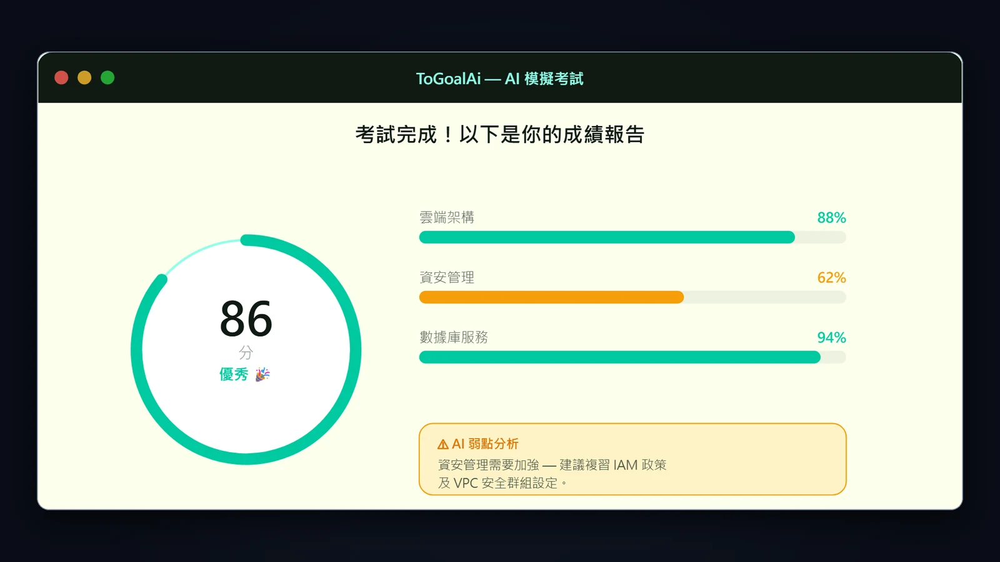

產品開發 · 互動個案
ToGoalAi 學習平台
我主導產品設計及上線，由 AI 編碼代理實作。
- 負責
- 定義資料模型、檢索流程和評估方法。
- 用途
- 用戶可用自己的教材問答、練習及製作簡報。
- 引用
- 答案以段落編號引用教材原文。


§ 重點
一眼看懂
- 要解決
每位用戶只可以讀取自己帳戶及選定的教材。
- 流程
- 匯入教材按檔案類型處理文件、錄音和網頁；Supadata 取得影片逐字稿。
- 建立問答只讀用戶選定的教材，段落標上編號。
- 完成交付由 UI、登入、訂閱到可修改的簡報和 PPTX 輸出，透過 GitHub 管理版本、Vercel 部署。
- 工具
- Next.js
- TypeScript
- Supabase
- RAG
§ 試用
親手試用

正式站首頁。可切換至設定考試、作答及成績畫面。
教材處理路徑
- 輸入
- 文字 PDF 或掃描件
- 匯入處理
- unpdf 先取文字層。缺少有效文字時，交 Gemini 直接讀 PDF。
- 共用資料
- Supabase 儲存教材與筆記段落，供問答、出題及複習讀取。
技術與取捨
- 前端與 UI
- Next.js 教材工作區：簡報流程分步收集需求，用戶可修改大綱及投影片，再以 PptxGenJS 匯出。
- 後端與 API
- 設計教材匯入、出題及問答 API。Supabase 管理登入和教材資料，整合 Google 登入及 Stripe 訂閱。
- RAG 與成本
- 問答只讀選定教材的編號段落，回答以 [段落編號] 引用來源。先估算上下文長度，超出模型預算才額外呼叫壓縮模型。合適的繁中問答會重用有效的教材快取。
- 部署與交付
- 我定義架構、資料模型和介面流程，程式由 AI 編碼代理實作；以 GitHub 管理版本並部署到 Vercel。正式站支援問答、模擬試、口試及可編輯簡報。
§ 問題問題與限制
- 每位用戶只可以讀取自己帳戶及選定的教材。
- 答案要附出處，用戶可以回到原段落核對。
- 長教材會超出模型的上下文預算。
§ 做法做法細節
這是我自大學開始一人主導的客製化學習工作區，現有 2,000+ 註冊用戶。
- 簡報
- 使用者可先修訂簡報大綱，再逐頁修改組件。
- 問答
- 問答規則要求答案只以用戶文件為根據，並以段落編號引用。
- 不補答
- 文件沒有的內容直說，不用模型記憶補答。
- 評估
- 我做過 RAG 接地評估，檢查答案是否守住這條規則。
匯入教材
按檔案類型處理文件、錄音和網頁；Supadata 取得影片逐字稿。
建立問答
- 範圍
- 只讀用戶選定的教材，段落標上編號。
- 作答
- 模型按規則只用這些段落作答，並以 [段落編號] 引用。
- 壓縮
- 超出上下文預算才呼叫壓縮模型。
完成交付
由 UI、登入、訂閱到可修改的簡報和 PPTX 輸出，透過 GitHub 管理版本、Vercel 部署。
架構：模型、程式與人手的分工
- 程式選定教材
按用戶帳戶及所選的一份教材讀取筆記段落，其他教材不會進入上下文。
- 程式段落編號
每段以「[編號] 標題」接上內容，組成模型看到的教材。
- 程式預算檢查
估算 token；未超出預算原文直送，不額外呼叫模型。
- 模型必要時壓縮
超出預算才由壓縮模型摘要，保留定義、公式、日期和名稱。
- 程式上下文快取
預設模型的繁中問答，把系統規則和教材建成 Gemini 快取，一小時內同一教材的提問重用。
- 模型接地作答
只按教材作答並以 [編號] 行內引用；教材沒有就直說，不用訓練知識補答。
- 程式解析引用
取出答案末尾的 CITATIONS JSON 存入對話紀錄；介面列出引用，點擊即捲到原段落並高亮。
- 人手修訂
用戶先修訂簡報大綱，再逐頁修改組件，然後匯出 PPTX。
一次提問怎樣接地及引用
- 01
送入模型
- [0] 第一章 · 定義
- [1] 第一章 · 例子
- [2] 第二章 · 比較表
只有這份教材的段落，每段帶編號。
- 02
系統規則
- 只按提供的內容作答
- 以 [chunk_index] 行內引用
- 內容沒有就直說，不用訓練知識
節錄自系統提示，原文見下方程式。
- 03
模型輸出
- 答案正文 …… [2]
- CITATIONS: [{"chunk_index":2, "heading":"…", "excerpt":"…"}]
引用編號及 JSON 格式由規則指定。
- 04
介面
- [2] 第二章 · 比較表
- 點擊 → 捲到原段落，高亮 3 秒
答案下方列出引用；同一份 JSON 存入對話紀錄。
模型與成本
每一步用甚麼、為甚麼，以及費用省在哪裏。表內只列做法；比較數字只寫已量度的。
| 步驟 | 用甚麼 | 為甚麼 | 省在哪裏 |
|---|---|---|---|
| 選模型 | 程式伺服器決定，預設 Gemini 2.5 Flash-Lite | 用戶要求的模型超出其方案，伺服器改用預設模型 | 較貴的模型只開放給相應方案 |
| 點數與限流 | 程式每次問答先扣點數；每位用戶有速率上限 | 點數按各模型的 API 成本設定；免費方案的模擬試每月上限 10 次 | 每次呼叫的 API 成本低於所扣點數的價值 |
| 預算檢查 | 程式程式估算 token | 未超出預算原文直送；超出才由 Flash-Lite 壓縮 | 多數問題不用額外一次模型呼叫 |
| 上下文快取 | 程式Gemini 快取 | 只為預設模型的繁中問答建快取（程式註明：最便宜、快取回報最高）；建快取時教材先壓到 3,000 token | 同一教材一小時內的提問重用快取 |
| 作答 | 輕量模型Flash-Lite，輸入上限 3,000 token、輸出上限 1,500 | 只按教材作答，並以段落編號引用 | 每次問答的用量有上限 |
// src/app/api/sources/[id]/chat/route.ts（節錄）
// 1. 預設模型；用戶要求的模型超出其方案時，由伺服器改回預設模型
const FREE_MODEL_ID = "gemini-2.5-flash-lite";
// …
// Resolve model + enforce role access server-side
const resolvedModelId = requestedModelId ?? FREE_MODEL_ID;
const modelConfig = getModelConfig(resolvedModelId);
const effectiveModel = canUseModel(role, modelConfig) ? modelConfig : getModelConfig(FREE_MODEL_ID);
// …
// 2. 只為預設模型的繁中問答建快取；建快取時教材先壓到 3,000 token
// ── Prompt Caching (ToGoalAi only — cheapest, highest cache ROI) ────────
// Only use cache for default lang (zh-Hant); other langs get fresh responses to respect language choice
const useCache = effectiveModel.id === FREE_MODEL_ID && (!lang || lang === "zh-Hant");
// …
if (useCache) {
if (!cacheValid) {
// Compress context to fit within cache token budget
const compressedContext = await compressToFit(rawContext, 3_000, `"${source.title}" study content`);
cacheName = await createGeminiCache(systemPrompt, compressedContext);
// …節錄自正式站問答 API（src/app/api/sources/[id]/chat/route.ts）。
關鍵決定與取捨
採用按帳戶及選定教材讀取段落
不採用在全部資料中檢索
答案只來自用戶自己的教材。
採用整份選定教材連段落編號送入上下文
不採用向量檢索只取 top-k 段落
單份教材多數放得進上下文，全文作答不會因檢索漏掉相關段落；代價是長教材要先壓縮。
採用規則要求教材沒有就直說
不採用讓模型用訓練知識補答
學習及考試題材寧可說「未涵蓋」，也不給聽起來合理的錯答案。
採用超出預算才壓縮
不採用每次都先壓縮
多數問題不需要額外一次模型呼叫。
// src/app/api/sources/[id]/chat/route.ts（節錄）
// 1. 只讀這位用戶選定的一份教材，段落逐一標上編號
const rawContext = chunks.length > 0
? (chunks as Array<{ index: number; heading: string; content: string }>)
.map(c => `[${c.index}] ${c.heading}:\n${c.content}`)
.join("\n\n")
: (source.content_text ?? source.transcript ?? "");
// 2. 系統規則中的兩條接地規則及引用格式
RULES:
- Answer ONLY from the content provided. Cite inline using [chunk_index] notation.
- If the answer is not in the content, say so clearly — do NOT fall back on your own training knowledge.
- End every response with: CITATIONS: [{"chunk_index":0,"heading":"...","excerpt":"..."}]
// 3. 串流完成後取出 CITATIONS JSON，連同答案存入 chat_messages
const citationsMatch = fullContent.match(/CITATIONS:\s*(\[[\s\S]*?\])/);
let citations: Citation[] = [];
if (citationsMatch) {
try { citations = JSON.parse(citationsMatch[1]); } catch { /* ignore */ }
}節錄自正式站問答 API：段落編號、兩條接地規則及引用格式，以及串流完成後的 CITATIONS 解析。
§ 結果實際成果
一人主導設計及上線，現有 2,000+ 註冊用戶：由 UI、登入、訂閱到 PPTX 輸出，程式由 AI 編碼代理實作，經 GitHub 管理版本、Vercel 部署。
RAG 接地評估：檢查答案是否只以用戶文件提及的內容為根據，以及文件沒有的內容會否直說，而不是用模型記憶作答。
評估
- 接地評估
RAG 接地評估：檢查答案是否只以用戶文件提及的內容為根據，以及文件沒有的內容會否直說，而不是用模型記憶作答。
§ 限制失敗情況與防護
| 可能出錯 | 防護 |
|---|---|
| 答案沒有根據 | 答案保留出處，用戶可回到原段落。 |
| 跨帳戶取到別人的資料 | 檢索前先按帳戶過濾。 |